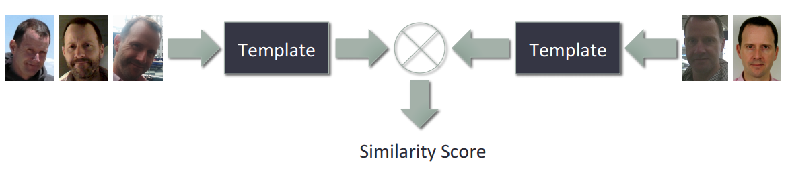
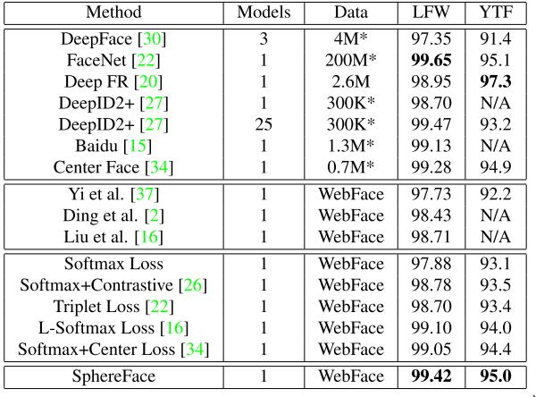
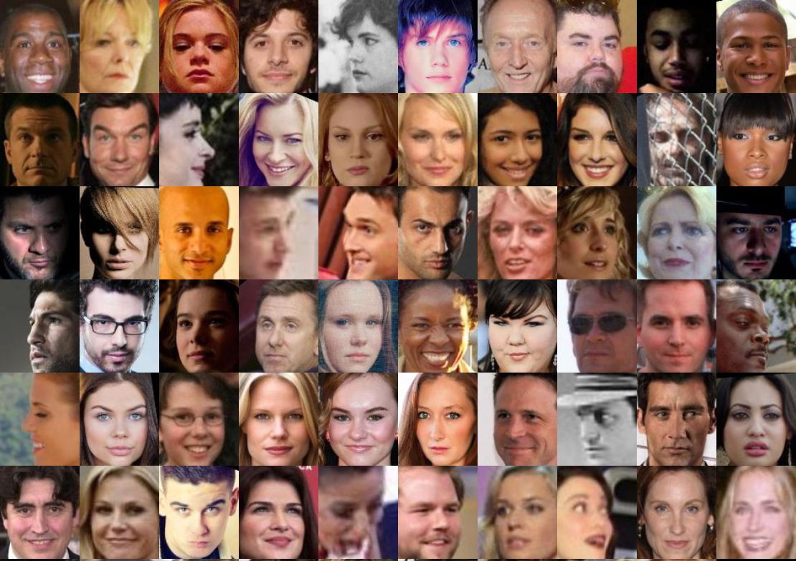

Demystifying Face Recognition: Introduction
Wstęp
W internecie można znaleźć dużą liczbę artykułów oraz materiałów przedstawiającą technikę rozpoznawania twarzy. Większość z nich opiera się na wytłumaczeniu pipeline rozpoznawania wraz z wykorzystam przygotowanych, open-source bibliotek. Dobrymi przykładami materiałów jest OpenFace, Face-Net czy Dlib. Każdy z nich dostarcza algorytmy wysokiej jakość. Jednak co jeśli okazuje się, że algorytm nie spełnia naszych oczekiwań, jak go ulepszyć, jakie są możliwe metody? Oraz jak poprawnie przebadać algorytm, aby uzyskać odpowiedź, czy algorytm jest na pewno lepszy od poprzednio używanego? W serii blogów postaram się przybliżyć temat Rozpoznawania Twarzy, pokazać możliwe metody do zwiększenia jakości algorytmu oraz zweryfikować propozycje naukowców w kontrolowanych warunkach testowych. Najpierw przybliżmy temat testowania algorytmów rozpoznawania twarzy.
Wiodące technik badania jakości algorytmów rozpoznawania twarzy
Temat rozpoznawania twarzy jest obecny w uczeniu maszynowym od dawna, jednak dopiero od 2008 widoczny jest postęp w osiągnięciu systemów dobrej jakości w warunkach niekontrolowanych. Przyczyną rozwoju technologii było przede wszystkim opublikowanie benchmarku o nazwie LFW (Labeled Faces in the Wild), który wyróżniał się przede wszystkim poprzez udostępnienie zdjęć zrobionych w niekontrolowanych warunkach. Główny test polegał na Pair-Matching, czyli na porównaniu zdjęć dwóch osób oraz wyrokowanie czy to jest ta sama czy inna osoba. Obecnie wiele metod na LFW uzyskuje wyniki bliskie doskonałości, ~99.5%. Ale jednocześnie taki rezultat nie gwarantuje bardzo dobrej jakości systemu w innych warunkach. Dlatego w 2014 zaproponowano rozszerzenie LFW (BLUFR) o protokół weryfiakcji, ale na odpowiednim poziomie FAR oraz o wiele większą liczbę par (~500 mln). Wprowadzono także protokół Identyfikacji, który odzwierciedla rozpoznanawania twarz w warunkach testowych.
W kolejnym roku zaproponowano kolejny benchmark rozpoznawania twarzy o nazwie 'IARPA Janus Benchmark A'. W kwestii protokołów, są one podobne do BLUFR. Główną różnicą jest testowanie na trudniejszych, specjalnie wybrancych zdjęciach i klatkach z video. Wprowadzono także testowanie za pomocą template, zamiast pojedyńczych zdjęć. Czyli bazujemy na testowaniu w stylu osoba v osoba zamiast zdjęcie vs zdjęcie.

W 2017 roku wprowadzono rozszerzenie o nazwie Janus Benchmark-B Face Dataset benchmarku, która poza zwiększeniem rozmiaru bazy danych, wprowadziło rozróżnienie pomiedzy testowaniem algorytmu na zdjęciach, na video lub na obu naraz. Dodatkowo wprowadza test klasteryzacji twarzy.
Ostatnim popularnym benchmarkiem jest MegaFace. Jak nazwa wskazuje, jest on benchmarkiem o dużo większej skali niż wszystkie inne, łącznie zawierając ponad 1 mln zdjęć. Istnieje dwa zbiory testowe, FaceScrub testujący zwykłą jakość algorytmu oraz FGNet, testujący age-invariant. Obie bazy są poddane testom na distractors. Tak jak inne benchmarki (oprócz najstarszego LFW), posiada dwa protokoły: weryfikacji(~ 4 bilion par) oraz identyfikacji. W przypadku Challange 1, naukowcy mają do wyboru dwa rodzaje testu: Small (dane uczące < 0.5M) oraz Large. W przypadku Challange 2 do uczenia modelu mamy dostępną bazę danych udostępniona przez MegaFace o rozmiarze ~5M zdjęć. Umożliwia to testowanie przedewszystkim algorytmu uczącego, a nie bazy danych (jak to jest w przypadku Challange 1, gdzie każdy może stosować własną bazę danych).
Bardzo dobre zestawienie wyników benchmarków zostało przedstawione w pracy A Light CNN for Deep Face Representation with Noisy Labels, w której autor zaprezentował bardzo dokładne porównanie jakości metod na wielu benchmarki dedykowane rozpoznawania twarzy (oprócz wyżej wymienionych: YTF, YTC, Multi-PIE, CACD-VS, CASIA 2.0 NIR-VIS, Celebrity-1000 ). Analizując wyniki można zauważyć widać wyraźne różnice pomiędzy wynikami pomiędzy tymi samymi modeli w różnych testach (np. w jednym różnica pomiędzy modelami jest 0.5% a w inny 20%). W celu lepszego analizowania modelu, należałoby skupić się na benchmarkach wyraźnie pokazujących skoki jakości modeli, czyli należy unikać wyrokowanie co do jakości na podstawie tylko wyniku LFW, który jest najmniej wiarygodnym obecnie wynikiem.
Współczesne techniki rozpoznawania twarzy
Główne metody rozpoznawania twarz opierają się na Deep Learningu. Naukowcy prześcigają się w metodach polepszania jakości za pomocą powiększana zbioru uczącego, zmiany architektur sieci czy zmiany funkcji celu. Za obecnie najlepszą technikę rozpoznawania twarzy uważam algorytm Vocord, zwycięzcę benchmarku MegaFace oraz obecnie drugi najlepszy algorytm wg raportu NIST. Niestety nie znamy żadnych szczegółów na temat wykorzystanych technik do uzyskania tak dobrego wyniku.
Jeżeli spojrzymy na inny benchmark, LFW, tutaj występuje wiele wyników osiągających wynik > 99.5%, których na których znamy więcej szczegółów implementacyjnych. Większość z nich operuje na bazach danych około 2M zdjęć oraz kilku sieciach neuronowych. Prace proponują także inne podejścia do uczenia poprzez zmianę ‘pipeline’ lub dodanie nowej funkcji celu. Jednakże, wg. mnie taki opis eksperymentów nie zbliża nas do osiągnięcia jeszcze lepszych wyników w przyszłości, ponieważ nie da się z nich wyciągnąć konkretnych wniosków na temat procesu uczenia jak np.
- Czy twarz powinna być wyprofiliowana czy nie?
- Jakie techniki Data Augumentation pomagają?
- Jakie dodatki do architektur sieci pomagają?
- Jakie funkcje celu mają najkorzystniejszy wpływ na uczenie?
Dzieje się tak, ponieważ każdy naukowiec używa swojej bazy danych, swojej koncepcji uczenia, nie zawsze dążą do osiągnięcia jak najlepszego wyniku, a do pokazania słuszności postawionej tezy. Jest to oczywiście zrozumiałe podejście, ponieważ na tym polega nauka. Jednak w celach praktycznych, warto także zbadać obecne limity rozpoznawania twarzy, poprzez kombinację różnych technik. W celu zaznajomienia się z obecnymi wynikami na benchmarki LFW oraz YTF, prezentuję tabelę z pracy SphereFace. Jest ona o tyle ciekawa, że ma podane także rozmiar bazy danych wykorzystanej do uczenia oraz liczbę wykorzystanych sieci neuronowych.

Nie są to wszystkie dostępne, wyniki. Jednak pozwalają one nam na ogólny pogląd na dokładność algorytmów. Obecnie najwyższy wynik na LFW to 99.83%, zarejestrowany przez firmę Glasix z następującym opisem metody:
Brief author's description:
We followed the Unrestricted, Labeled Outside Data protocol. The ratio of White to Black to Asian is 1:1:1 in the train set, which contains 100,000 individuals and 2 million face images. We spent a week training the networks which contain a improved resnet34 layer and a improved triplet loss layer on a Dual Maxwell-Gtx titan x machine with a four-stage training method.

Jeżeli chcecie zobaczyć więcej wyników, zapraszam na strony:
Cel serii postów
Głównym celem serii postów, będzie opracowanie pełnego algorytmu, który będzie jak najlepiej działał na ogólno dostępnych benchmarkach, przy czym docelowym testem będzie MegaFace Challange 1 - Small oraz MegaFace Challange 2. W tym celu będą testowanie każdy element z pipelinu, min. następujące idee:
- Dobór architektury sieci
- Techniki Data Augumentation
- Wybór algorytmu optymalizacji sieci
- Funkcje celu
Aby mieć możliwość wyciągnięcia wniosków z eksperymentów zostaną założone ograniczenia oraz założenia początkowe, ułatwiające analizę wyników.
Ograniczenia:
- Wszystkie algorytmy będą operować na bazie danych CASIA-WebFace (0.5M zdjęć, 10k ludzi)
- 90% zbioru danych będzie stanowić zbiór treningowy, 10% walidacyjny
- W czasie testowania modelu, dla każdego zdjecia będą ekstrakowane tylko jeden zbiór cech (czyli nie będziemy wykorzystywać ‘mirror-trick’
- Zawsze będzie wykorzystywany tylko jeden egzemplarz architektury sieci (czyli brak łączenia cech z kilku sieci)
- Początkowy LR został wybrany z setu: 0.1, 0.04, 0.01, 0.001.
- Do redukcji LR został wykorzystana algorytm detekcji
Plateu
Założenia początkowe:
- Architektury sieci będą używały obrazów wykrytych oraz wyprofiliwanych za pomocą algorytmu MTCNN. Ich rozmiar wynosi 112x96.
- Podstawową techniką Data Augumentation podczas uczenia będzie ‘mirror’

Rozmiar bazy danych jak i obrazów wejściowych został tak dobrany, aby umożliwić uzyskanie wysokiej jakości metody, a jednocześnie skrócić czas jej działania. Liczba eksperymentów potrzebna do uzyskania końcowego wyniku jest ogromna, a moc obliczeniowa ograniczona.
Jako podstawowy wyznacznik jakości metody będą brane pod uwagę dwa wyniki: LFW, LFW-BLUFR. Dodatkowo dla najlepszego modelu z danego postu przeprowadzę testy na IARPA Janus Benchmark-A oraz MegaFace.
Każdy z eksperymentów będzie porównywany do baseline, czyli wybranego sposobu (dane->architektura->funka celu), która uzyskała swój wynik dość prostymi metodami. Pozwoli to nam na ocenienie, czy nowa, zaproponowana technika wpływa na jakość algorytmu pozytywnie.
To na tyle w wprowadzeniu, w następnym poście zajmiemy się stworzeniem baseline